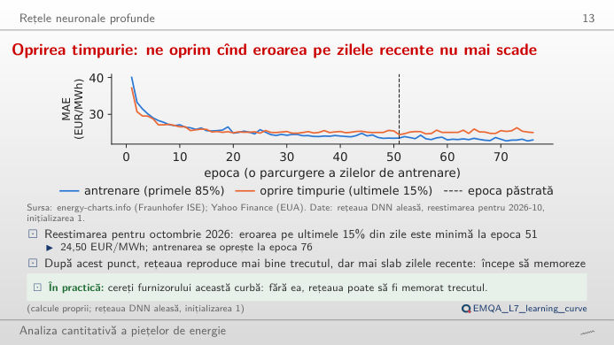
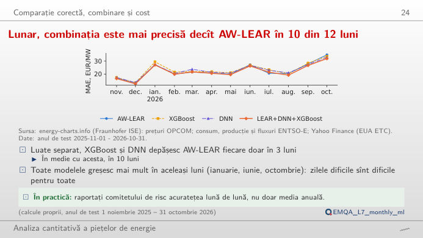
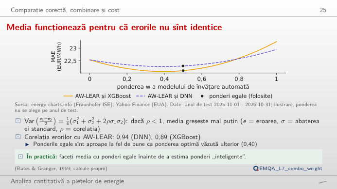
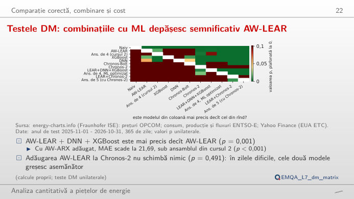
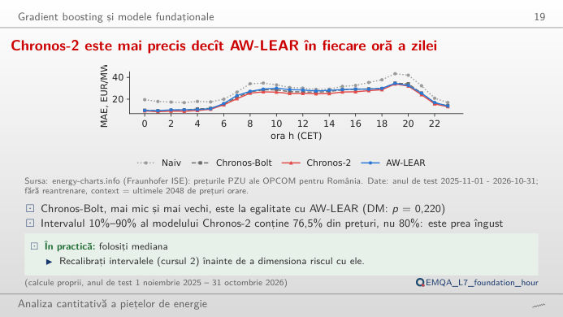
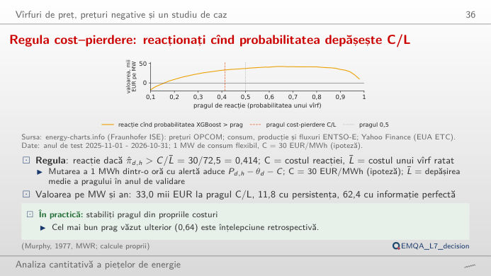

În stînga este slide-ul din curs, în dreapta aceeași figură, recalculată în browser din rezultatele salvate ale Quantlet-urilor (prognozele anului de test 1 noiembrie 2025 – 31 octombrie 2026) și din prețurile românești pentru ziua următoare. Butonul ▶ modifică parametrul principal pas cu pas. Abrevieri: MAE = eroarea absolută medie (mean absolute error); DNN = rețea neuronală adîncă (deep neural network); XGBoost = extreme gradient boosting; LEAR = model autoregresiv estimat cu LASSO (least absolute shrinkage and selection operator); AW-LEAR / AW-ARX = media prognozelor LEAR / ARX (model autoregresiv cu variabile exogene) pe mai multe ferestre de calibrare; GBM = gradient boosting machine; MLP = perceptron multistrat; DM = testul Diebold–Mariano; ROC = receiver operating characteristic (curba caracteristică de operare); AUC = aria de sub curba ROC.
Rețele neuronale adînci · Compararea modelelor, combinarea lor și costul de calcul · Gradient boosting și modele fundație · Salturi de preț, prețuri negative și un studiu de caz
Rețele neuronale adînci
Oprirea timpurie: ne oprim cînd eroarea pe zilele recente nu mai scade

Răspuns
Nu. Eroarea de antrenare continuă să scadă, pînă la 23,06 EUR/MWh în epoca 76, dar eroarea pe zilele recente este minimă în epoca 51 (24,50 EUR/MWh) și ajunge la 25,07 EUR/MWh în epoca 76: după epoca 51, rețeaua memorează trecutul. Cu o răbdare scurtă, căutarea se oprește prea devreme: cu 5 epoci se oprește în epoca 30 și păstrează epoca 25 (24,91 EUR/MWh).
Compararea modelelor, combinarea lor și costul de calcul
Lunar, combinația este mai precisă decît AW-LEAR în 10 din 12 luni

Răspuns
În 10 din 12 luni (MAE anual 21,97 EUR/MWh); singure, XGBoost și DNN bat AW-LEAR doar în cîte 3 luni. Toate modelele greșesc cel mai mult în aceleași luni: octombrie 2026 este luna cea mai slabă pentru AW-LEAR (34,9 EUR/MWh). Chronos-2, un model fundație folosit fără antrenare pe aceste date, are cel mai mic MAE anual, 20,82 EUR/MWh.
Media funcționează pentru că erorile nu sînt identice

Răspuns
Aproape deloc. Cea mai bună pondere văzută ulterior pe anul de test este w = 0,40 (MAE 22,06 EUR/MWh), față de 22,10 EUR/MWh cu w = 0,5, iar ponderea cea mai bună nu este cunoscută dinainte. Deoarece corelația este sub 1, media greșește mai puțin decît fiecare model (23,26 pentru XGBoost, 22,53 pentru AW-LEAR). Pentru AW-LEAR + Chronos-2, ponderea văzută ulterior ar fi w = 0,75 (20,57 EUR/MWh, față de 20,81 cu ponderi egale).
Testele DM: combinațiile cu ML depășesc semnificativ AW-LEAR

Răspuns
Da: p = 0,001 (statistica DM 3,09, cu 7 laguri Newey–West). Testul folosește cele 365 de erori absolute medii zilnice; diferența cumulată din dreapta crește constant de-a lungul anului, nu doar în cîteva zile. În schimb, adăugarea AW-LEAR la Chronos-2 nu schimbă nimic (p = 0,491). Modificați numărul de laguri: concluzia pentru această pereche nu depinde de el.
Gradient boosting și modele fundație
Chronos-2 este mai precis decît AW-LEAR în fiecare oră a zilei

Răspuns
Bate AW-LEAR în toate cele 24 de ore (MAE anual 20,82 față de 22,53 EUR/MWh). Banda sa 10%–90% conține însă 76,5% dintre prețuri, nu 80%: este prea îngustă și trebuie recalibrată (Cursul 2) înainte de a fi folosită pentru risc. Chronos-Bolt, mai mic și mai vechi, este la egalitate cu AW-LEAR (22,15 EUR/MWh, DM p = 0,220).
Salturi de preț, prețuri negative și un studiu de caz
Regula cost–pierdere: reacționați cînd probabilitatea depășește C/L

Răspuns
C/L̄ = 30/72,5 = 0,414, fixat dinaintea anului de test, din costuri. Cu XGBoost dă 1806 alerte și 33,0 mii EUR pe MW și an; persistența dă 11,8, iar previziunea perfectă 62,4. Pe acest an de test, pragul 0,5 a ieșit puțin mai bine (36,7), iar 0,64 cel mai bine: acestea sînt alegeri făcute ulterior. Măriți C: regula cere o probabilitate mai mare înainte de a acționa.
Prețuri: OPCOM PZU (piața românească pentru ziua următoare), prin energy-charts.info (Fraunhofer ISE), ziua de livrare CET × 24 de ore (din 1 octombrie 2025, ora este media celor patru sferturi de oră). Prognoze și probabilități: rezultatele salvate ale Quantlet-urilor EMQA_L7_* (calcul propriu: AW-LEAR recalibrat zilnic, DNN și XGBoost reestimate lunar, Chronos fără antrenare, zero-shot). Anul de test: 2025-11-01 – 2026-10-31.